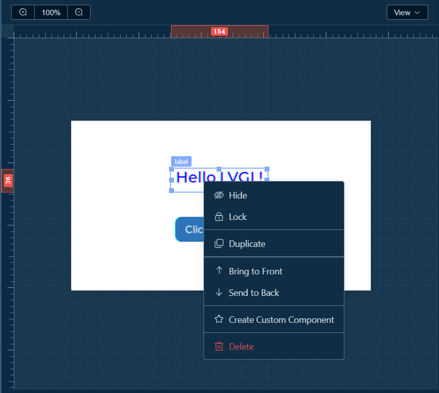

🎨 Canvas Area¶
The canvas is the core area of visual design, where you can intuitively design UI interfaces.
1.1 Basic Canvas Operations¶
View Control¶
Zoom Canvas
- Scroll mouse wheel: Zoom canvas (50% - 200%)
- Ctrl + Wheel: Finer zoom control
- Click zoom ratio button: Reset view to 100%
Pan Canvas - Hold and drag left mouse button: Move canvas view - Click zoom ratio button: Return to canvas center
Grid Display - Click canvas toolbar "View/Show Grid" button: Toggle grid display
1.2 Rulers and Guidelines¶
Ruler System¶
- Rulers displayed at top and left of canvas
- Ruler scale adjusts automatically with canvas zoom
Guideline Features¶

Create Guidelines - Double-click canvas area to create guidelines automatically - Drag from ruler to create guidelines (horizontal/vertical)
Adjust Guidelines - Click and drag guidelines to move position - Drag guidelines outside ruler to delete
Guideline Management - Toolbar "Show Guidelines" button: Show/hide all guidelines - Toolbar "Clear Guidelines" button: Delete all guidelines
1.3 Component Operations¶
Add Component¶
- Select component from left component library
- Drag to canvas
- Release mouse to complete addition
Select Component¶
- Single selection: Click component in canvas
- Quick selection: Click corresponding component in component tree
Move Component¶
- Free move: Drag component to target position
- Numeric input: Enter precise coordinates in properties panel
Resize¶
- Drag resize: Drag control points at component corners to resize
- Proportional scaling: Hold
Shiftwhile dragging to maintain aspect ratio - Precise setting: Enter width and height values in properties panel
Copy and Paste¶
Ctrl + C: Copy selected componentCtrl + V: Paste component- Right-click menu: Select "Copy"
- Use "Copy" in component tree operation menu
Delete Component¶
- Press
Deletekey after selecting component - Right-click menu and select "Delete"
- Delete in component tree operation menu
Component Operations¶
- Right-click on selected component to show operation menu

- Click the more operations button on the right of the component in the component tree to show the menu
1.4 Component Alignment¶
When dragging a selected component, alignment lines with other components (horizontal/vertical) will be displayed
1.5 Component Layering¶
Adjust Layer (in component tree or right-click menu) - Bring to Front: Move component to top layer - Send to Back: Move component to bottom layer
Layer Rules - Later added components default to upper layer - Child components are always above parent components - Selected components show selection box
1.6 Lock and Hide Components¶
Lock Component - Right-click and select "Lock" or click lock icon in component tree - When locked, cannot select and edit, preventing accidental operations - Click again to unlock
Hide Component - Right-click and select "Hide" or click eye icon in component tree - When hidden, component is invisible but still exists in component tree - Click again to show
Workspace Docs: ← Back to Workspace | Canvas | Components | Tree | Properties | Toolbar | Shortcuts